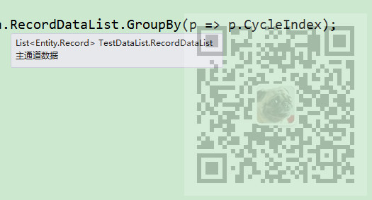

原文出处:本文由博客园博主霸道流氓提供。
原文连接:https://www.cnblogs.com/badaoliumangqizhi/p/11839884.html
原文连接:https://www.cnblogs.com/badaoliumangqizhi/p/11839884.html
场景
有一个Record对象的list，如果要根据其某个属性CycleIndex进行分组，类似于sql的group by分组查询。
如果要在这个这个list中查找出符合某种条件的数据，类似于sql的where条件查询。
注：
博客主页：
https://blog.csdn.net/badao_liumang_qizhi
关注公众号
霸道的程序猿
获取编程相关电子书、教程推送与免费下载。
实现
如下要对此list进行分组

对其分组后，会形成多组数据，每组又是多个实体对象Record，每个Record又有多个属性。
IEnumerable<IGrouping<int, Entity.Record>> groups = RecordDataList.GroupBy(p => p.CycleIndex);
那么怎样获取每一组的数据，该用何种类型去接收
foreach(var group in groups)
{
}
这样每一个group就是分完组后的多个Record。
接下来再进行遍历获取
foreach(var group in groups)
{
foreach(Entity.Record record in group)
{
int a = record.CycleIndex;
double b = record.ECurrent;
}
}
如果要在list中获取某个或某些符合条件的数据
IEnumerable<Entity.Record> record = RecordDataList.Where(p => p.CycleIndex == int.Parse(node.Id));
同理其他查询筛选方式同理